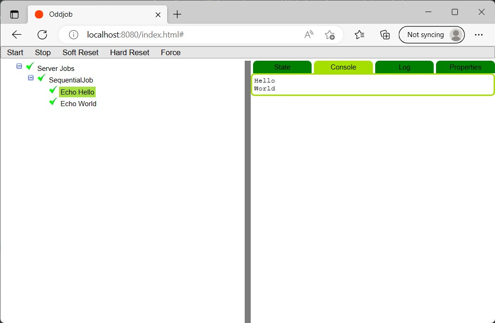
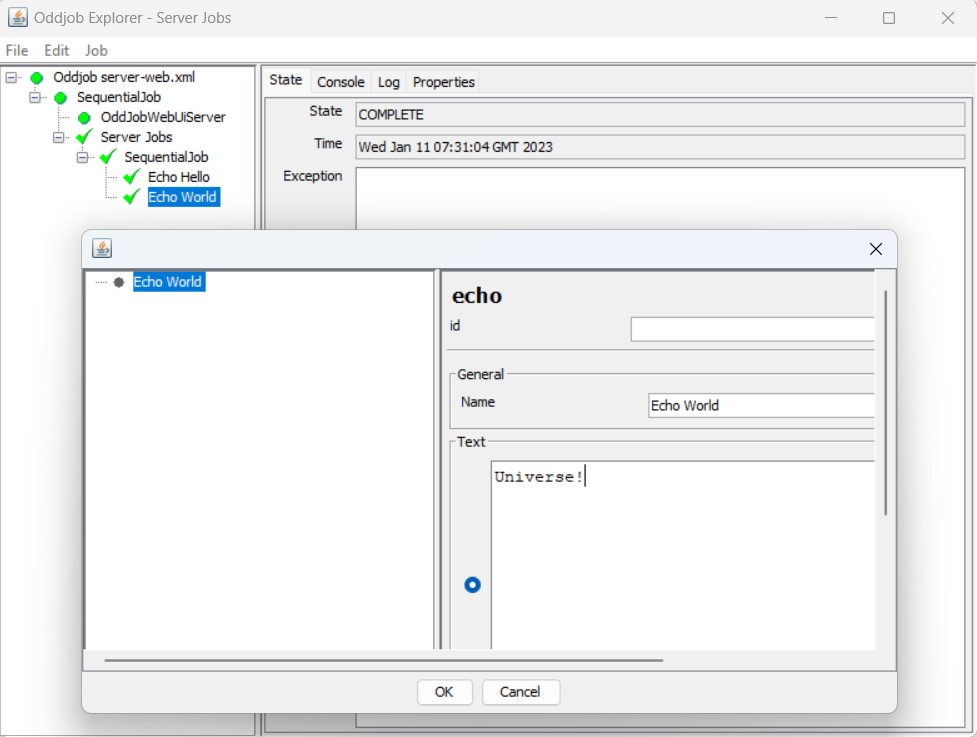

Installing and Running Oddjob.
Download the file oddjob-@version@.zip and unzip to a directory of your choice.
Download the .tar.gz move to a directory of your choice, and then unpack the tarball
tar xzvf oddjob-@version@.tar.gz
From the console, change directory to where you installed oddjob and run:
java -jar run-oddjob.jar -f server-jobs.xml
And you should see:
Hello World
To add a browser, run:
java -jar run-oddjob.jar -f server-web.xml
Point your browser at localhost:8080 and you should see:
Navigate down the job tree in the left panel to get more detail:
Type Ctrl-C to stop the server.
To edit jobs, run:
java -jar run-oddjob.jar server-web.xml
Select the root job in the left of the panel and hit Ctrl-Alt-R to start the server. (The jobs are now visible in the browser again)
Navigate down the job tree to one of the jobs, and hit Ctrl-G to change the configuration:
Oddjob Explorer is the main way of interacting with Oddjob and will be central in the next few sections.
(On Windows and a high DPI monitor, fonts may not scale. Please see this post for a fix: How do I run Java apps upscaled on a high-DPI display?)